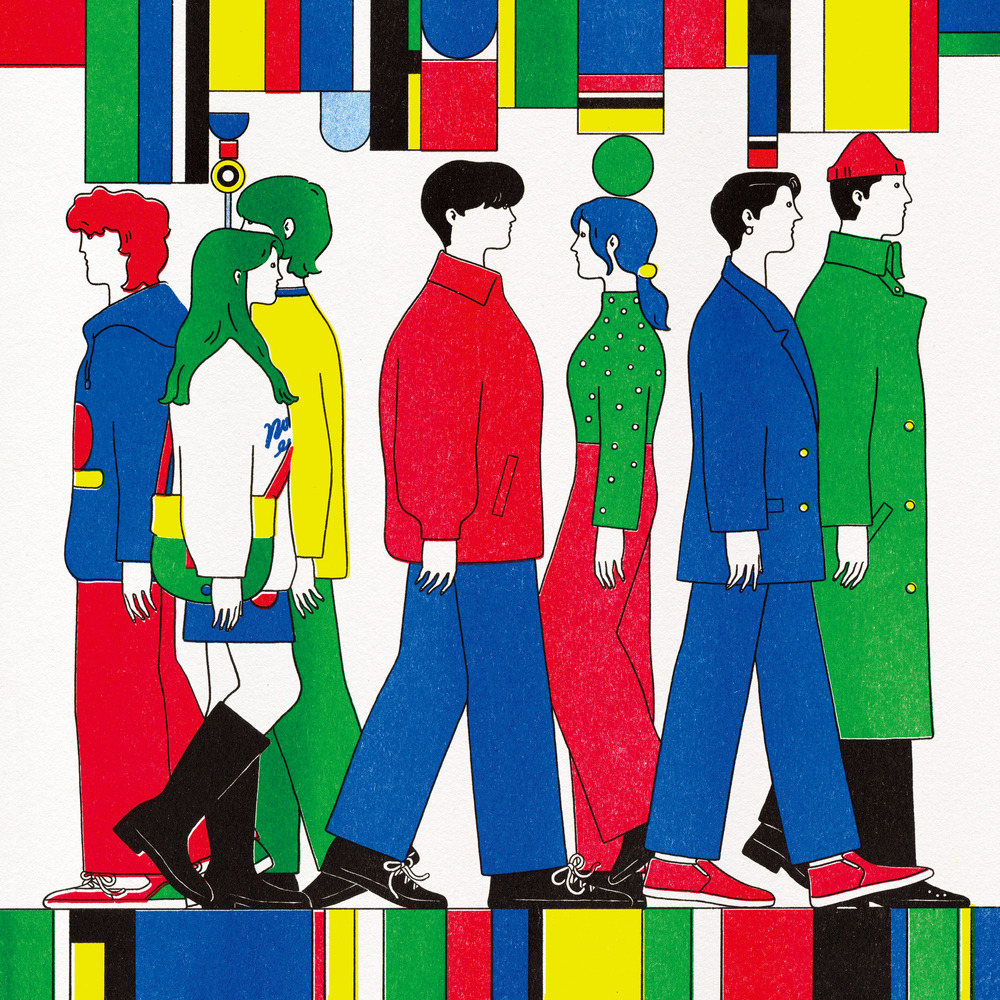

안녕하세요, 라보엠입니다.
오늘은 싱어송라이터 김수영의 첫 정규앨범 [Round and Round]의 타이틀곡, 비틀비틀을 소개해드리려 합니다. 김수영 특유의 따스하면서도 담백한 목소리, 그리고 서정적인 가사가 어우러진 이 곡은, 일상 속에서 마음이 흔들리고 비틀거리는 우리 모두의 이야기를 담고 있습니다.
김수영, 그리고 ‘비틀비틀’
김수영은 포크와 팝을 아우르는 음악적 색깔과, 편안하게 잘 들리는 멜로디, 그리고 누구나 공감할 수 있는 노랫말로 많은 사랑을 받고 있는 뮤지션입니다. 2017년 데뷔 이후 EP와 싱글을 통해 자신만의 감성을 차곡차곡 쌓아왔고, 2023년 2월 첫 정규앨범 [Round and Round]를 발매하며 한층 더 깊어진 음악 세계를 보여주었습니다. 비틀비틀은 이 앨범의 대표곡으로, 김수영이 직접 작사·작곡에 참여해 진솔한 감정을 담아냈죠.
곡의 분위기와 메시지
비틀비틀은 제목 그대로, 마음이 흔들리고 중심을 잡기 어려운 순간을 노래합니다. 이상하게 만났고, 아무 생각 없던 상대가 자꾸만 내 마음에 들어오며, 매일 같은 생각에 어질어질해지는 감정. “넌 이상하게 돌아 자꾸만 맴돌아 / 넌 오늘도 잊지 않고 날 찾아오네”라는 가사처럼, 잊으려 해도 자꾸만 떠오르는 누군가로 인해 마음이 비틀거리는 모습을 솔직하게 그려냅니다.
이 곡은 사랑의 시작점에서 느끼는 혼란, 그리고 상대를 향한 미묘한 감정의 소용돌이를 섬세하게 담아냈습니다. “도대체 너는 내게 정말 왜 이래 / 왜 자꾸만 내 마음에 들어올래 / 또 이리저리 나를 비틀비틀 걷게 만드네”라는 후렴구는, 사랑에 빠진 이들이라면 누구나 공감할 수 있는 솔직한 고백입니다. 김수영의 담백한 음색과 어쿠스틱 기반의 편곡이 어우러져, 곡에 담긴 감정이 더욱 진하게 전해집니다.
김수영 앨범 [Round and Round]

비틀비틀이 수록된 [Round and Round]는 데뷔 6년 만에 발표한 김수영의 첫 정규앨범으로, 삶의 순환과 감정의 굴레 속에서 비틀거리면서도 결국은 각자의 시간을 살아가는 우리 모두의 이야기를 담고 있습니다. 완벽한 희망은 아니지만, 뭉근한 위로와 작은 용기를 건네는 곡들로 채워져 있죠. 김수영의 목소리는 레퍼런스 없는 고유한 위로를 담고 있어, 듣는 이로 하여금 자신만의 감정에 솔직해질 수 있게 도와줍니다.
김수영 비틀비틀 - 노래 가사
1.
이상하게 만났고
아무 생각 없던 넌데
왜 자꾸 나를 찾아온거야
매일 같은 생각만
어질어질 네가 떠오르면 어떡해
넌 이상하게 돌아
자꾸만 맴돌아
넌 오늘도 잊지 않고 날 찾아오네
넌 이상해 맴돌아
우리 같은 시간 속에 닿게 된다면
나는 괜찮을텐데
이상하게 너는 내게 왜 이래
난 도망치듯 너를 비워보고
넌 이 상황에 남아있다면 어떨 것 같은데
도대체 너는 내게 정말 왜 이래
왜 자꾸만 내 마음에 들어올래
또 이리저리 나를 비틀비틀 걷게 만드네
2.
널 마주친다면
아무렇지 않은 척도
내 마음 들키면 나는 어떡해
매일 같은 생각들
난 어질어질 네가 떠올라
what you gonna do
넌 이상하게 돌아
넌 재촉해 맴돌아
난 오늘도 자꾸만 널 떠올리는데
넌 이상해 맴돌아
난 오늘도 비틀비틀 걷고 있다면
너
이상하게 너는 내게 왜 이래
난 도망치듯 너를 비워보고
넌 이 상황에 남아있다면 어떨 것 같은데
도대체 너는 내게 정말 왜 이래
왜 자꾸만 내 마음에 들어올래
또 이리저리 나를 비틀비틀 걷게 만드네
도대체 너는 내게 정말 왜 이래
왜 자꾸만 내 마음에 들어올래
또 이리저리 나를 비틀비틀 걷게 만드네
비틀비틀의 가사는 일상 속에서 누군가를 잊으려 애써도, 오히려 더 선명해지는 마음을 담담하게 풀어냅니다. “난 도망치듯 너를 비워보고 / 넌 이 상황에 남아있다면 어떨 것 같은데 / 도대체 너는 내게 정말 왜 이래”라는 구절은, 마음을 정리하려 애쓰는 이들의 복잡한 심정을 고스란히 전합니다. 반복되는 후렴은 사랑의 혼란스러움과 그 안에서 비틀거리는 감정을 더욱 강조합니다.
공연과 팬들의 반응
비틀비틀은 페스티벌 무대에서도 자주 불리며, 관객들과 함께 떼창하기 좋은 곡으로 자리 잡았습니다. 둠칫둠칫한 리듬과 따라 부르기 쉬운 멜로디 덕분에, 김수영의 공연에서는 늘 높은 호응을 얻고 있습니다. 팬들은 이 곡을 들으며 “마음이 흔들릴 때마다 위로가 된다”, “김수영만의 따뜻한 목소리가 마음을 감싸준다”는 반응을 보이고 있죠.
이런 분들께 추천드려요
- 사랑에 빠져 혼란스러운 감정에 공감하고 싶은 분
- 잔잔한 어쿠스틱 사운드와 서정적인 가사를 좋아하는 분
- 일상 속에서 작은 위로와 공감이 필요한 분
비틀비틀은 혼자 듣기에도, 누군가와 함께 듣기에도 좋은 곡입니다. 특히, 마음이 흔들릴 때 이 노래를 들으면, 김수영의 목소리가 조용히 곁을 지켜주는 듯한 따뜻함을 느낄 수 있을 거예요.
맺음말
김수영의 ‘비틀비틀’은 우리 모두가 한 번쯤 겪는 마음의 굴레와 흔들림을 솔직하게 노래합니다. 완벽하지 않아도, 비틀거리며 살아가는 우리에게 작은 위로와 용기를 건네는 곡이죠. 오늘 하루, ‘비틀비틀’을 들으며 자신의 감정에 솔직해지고, 따뜻한 위로를 받아보시길 바랍니다. 김수영의 음악이 여러분의 일상에 잔잔한 힘이 되어주길 바라며, 오늘의 노래 소개를 마칩니다